ThreadLocal使用及其实现原理
ThreadLocal的使用
通过ThreadLocal的set()方法设置到线程的ThreadLocal.ThreadLocalMap里的是是线程自己要存储的对象，其他线程不需要去访问，也是访问不到的。各个线程中的ThreadLocal.ThreadLocalMap以及ThreadLocal.ThreadLocal中的值都是不同的对象。
至于为什么要使用ThreadLocal，不妨这么考虑这个问题。Java Web中，写一个Servlet：
1 | public class Servlet extends HttpServlet |
我在一个普通JavaBean内想拿到这个HttpServletRequest，但是无法通过参数传递的方式
1 | public class OperateRequest |
这时候怎么办？第一个解决方案，Servlet类中定义一个全局的HttpServletRequest，至于怎么定义就随便了，可以定义成静态的，也可以定义成非静态的但是对外提供setter/getter，然后operateRequest()方法每次都取这个全局的HttpServletRequest就可以了。
不否认，这是一种可行的解决方案，但是这种解决方案有一个很大的缺点：竞争。既然HttpServletRequest是全局的，那势必要引入同步机制来保证线程安全性，引入同步机制意味着牺牲响应给用户的时间—-这在注重与用户之间响应的Java Web中是难以容忍的。
所以，我们引入ThreadLocal，既然ThreadLocal.ThreadLocalMap是线程独有的，别的线程访问不了也没必要访问，那我们通过ThreadLocal把HttpServletRequest设置到线程的ThreadLocal.ThreadLocalMap里面去不就好了？这样，在一次请求中哪里需要用到HttpServletRequest，就使用ThreadLocal的get()方法就把这个HttpServletRequest给取出来了，是不是一个很好的解决方案呢？
ThreadLocal使用
1 | public class LearnThreadLocal extends Thread{ |
输出
1 | ThreadA get value--->0 |
三个线程，各自将一个静态变量从0加到2，互不干扰
但是如果改成普通静态变量
1 | public class LearnThreadLocal2 extends Thread{ |
输出
1 | ThreadA get value--->0 |
且每次输出结果不可预料，因为不同的线程加的是同一个静态变量 ,如果加一个synchronize的话会从0一直加到8,所以ThreadLocal对于线程独立变量很有用。
用一个ThreadLocal也可以多次set一个数据，set仅仅表示的是线程的ThreadLocal.ThreadLocalMap中table的某一位置的value被覆盖成你最新设置的那个数据而已，对于同一个ThreadLocal对象而言，set后，table中绝不会多出一个数据。
1、ThreadLocal不是集合，它不存储任何内容，真正存储数据的集合在Thread中。ThreadLocal只是一个工具，一个往各个线程的ThreadLocal.ThreadLocalMap中table的某一位置set一个值的工具而已
2、同步与ThreadLocal是解决多线程中数据访问问题的两种思路，前者是数据共享的思路，后者是数据隔离的思路
3、同步是一种以时间换空间的思想，ThreadLocal是一种空间换时间的思想
ThreadLocal ,ThreadLocalMap 和Thread 的关系
这三者的关系由于大量的内部类的关系，第一次看的时候还是有点绕的 .建议先抛开内部类的关系，把每一个类当作普通类来看到，理解每個类的职责，最后再把内部类放进去考虑这样设计的目的。这里也给大家一个启示，面对复杂的事情的时候，我们需要跳出来，先把问题简单化，大方向把握了，再进一步去细化每一个功能点和设计的艺术
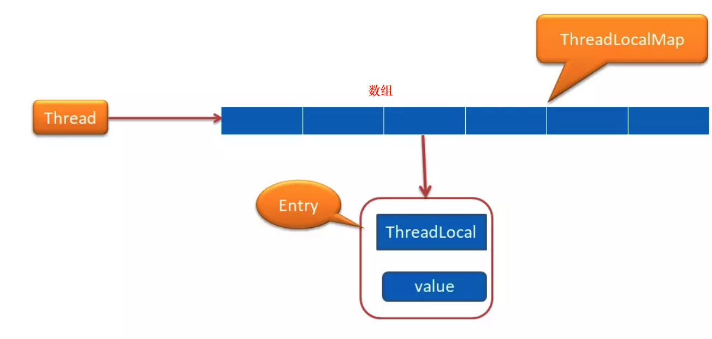
从上图我们可以发现Thread 中持有一个ThreadLocalMap
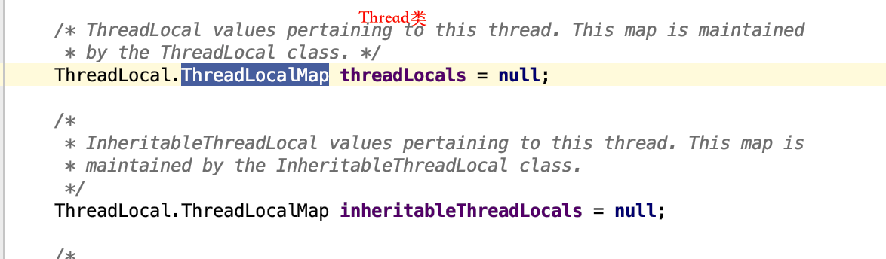
这里你可以简单理解为就是持有一个数组，这个数组是Entry 类型的。 Entry 的key 是ThreadLocal 类型的，value 是Object 类型。也就是一个ThreadLocalMap 可以持有多个ThreadLocal。他们是一对多的关系
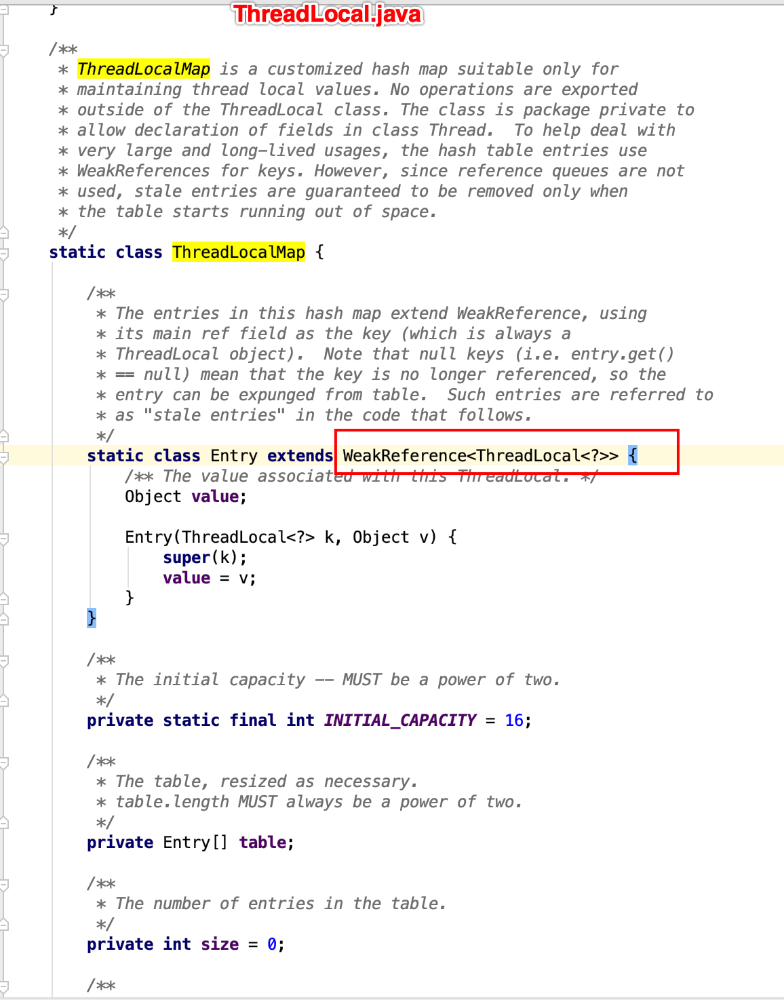
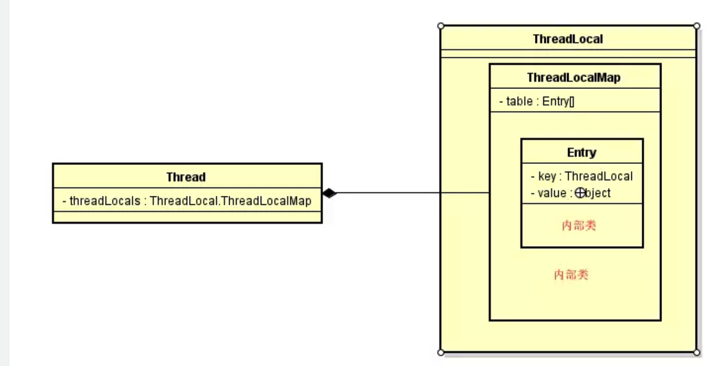
为何ThreadLocalMap设计为ThreadLocal内部类
看到各种内部类是不是有点晕，为什么不独立ThreadLocalMap 出来呢？其实这里涉及到内部类起到封装的作用。来，我们看看源码的解析
1 | /** |
主要是说明ThreadLocalMap 是一个线程本地的值，它所有的方法都是private 的，也就意味着除了ThreadLocal 这个类，其他类是不能操作ThreadLocalMap 中的任何方法的，这样就可以对其他类是透明的。同时这个类的权限是包级别的，也就意味着只有同一个包下面的类才能引用ThreadLocalMap 这个类，这也是Thread 为什么可以引用ThreadLocalMap 的原因，因为他们在同一个包下面。
虽然Thread 可以引用ThreadLocalMap，但是不能调用任何ThreadLocalMap 中的方法。这也就是我们平时都是通过ThreadLocal 来获取值和设置值，看下以下代码
1 | public class Test { |
但我们调用ThreadLocal 的get 方法的时候，其实我们最后是通过调用ThreadLdocalMap 来获取值的
1 | public T get() { |
1 | ThreadLocalMap getMap(Thread t) { |
到这里，读者应该大概明白了，其实ThreadLdocalMap 对使用者来说是透明的，可以当作空气，我们一值使用的都是ThreadLocal，这样的设计在使用的时候就显得简单，然后封装性又特别好。
ThreadLdocalMap何时与Thread 进行绑定
在第一次调用ThreadLocal set() 方法的时候开始绑定的，来我们看下set 方法的源码
1 | public void set(T value) { |
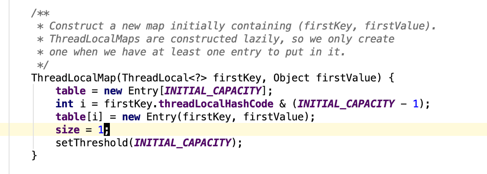
createMap 方法只是在第一次设置值的时候创建一个ThreadLocalMap 赋值给Thread 对象的threadLocals 属性进行绑定，以后就可以直接通过这个属性获取到值了。从这里可以看出，为什么说ThreadLocal 是线程本地变量了
举例
1 | public class Test { |
值真正是放在ThreadLocalMap 中存取的，ThreadLocalMap 内部类有一个Entry 类，key是ThreadLocal 对象，value 就是你要存放的值，上面的代码value 存放的就是hello word。ThreadLocalMap 和HashMap的功能类似，但是实现上却有很大的不同：
- HashMap 的数据结构是数组+链表
- ThreadLocalMap的数据结构仅仅是数组
- HashMap 是通过链地址法解决hash 冲突的问题
- ThreadLocalMap 是通过开放地址法来解决hash 冲突的问题
- HashMap 里面的Entry 内部类的引用都是强引用
- ThreadLocalMap里面的Entry 内部类中的key 是弱引用，value 是强引用
get方法
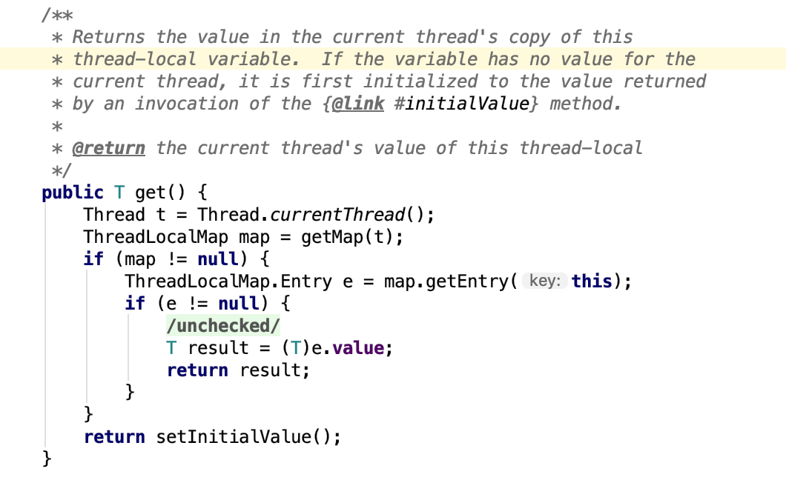
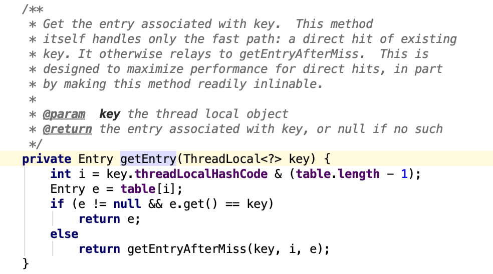
get方法其实就是set方法索引的逆向，根据key算出数组索引位置，把value返回出去
再谈三者关系
至此，我对ThreadLocal,ThreadLocalMap和Thread的关系有了更深的印象
ThreadLocalMap的key就是我们new出来的ThreadLocal对象,一个Thread中可以有多个ThreadLocal,如下面代码所示（就是ThreadLocalMap中有多个value,ThreadLocalMap其实是个数组,value的下标通过key哈希得到，数组该下标的位置存的就是value)）
1 | public class LearnThreadLocal extends Thread{ |
该数组就是table,它是Entry的数组
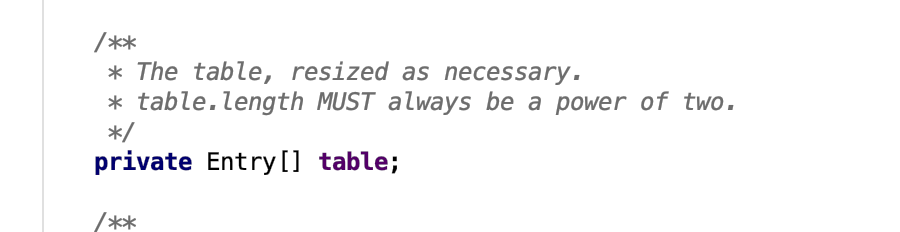
entry的数据结构
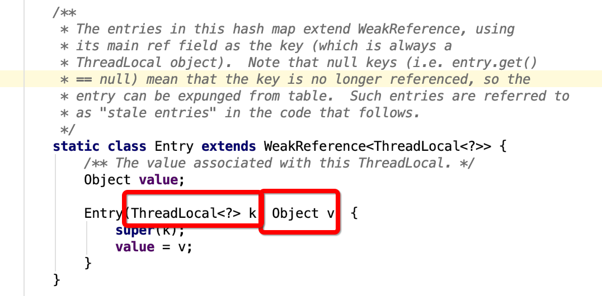
为什么ThreadLocalMap 采用开放地址法来解决哈希冲突?
jdk 中大多数的类都是采用了链地址法来解决hash 冲突，为什么ThreadLocalMap 采用开放地址法来解决哈希冲突呢？首先我们来看看这两种不同的方式
链地址法
这种方法的基本思想是将所有哈希地址为i的元素构成一个称为同义词链的单链表，并将单链表的头指针存在哈希表的第i个单元中，因而查找、插入和删除主要在同义词链中进行。列如对于关键字集合{12,67,56,16,25,37, 22,29,15,47,48,34}，我们用前面同样的12为除数，进行除留余数法：
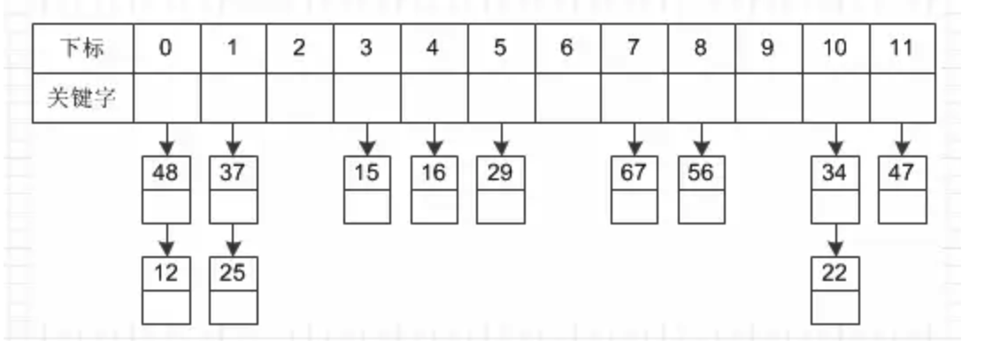
开放地址法
这种方法的基本思想是一旦发生了冲突，就去寻找下一个空的散列地址(这非常重要，源码都是根据这个特性，必须理解这里才能往下走)，只要散列表足够大，空的散列地址总能找到，并将记录存入。
比如说，我们的关键字集合为{12,33,4,5,15,25},表长为10。 我们用散列函数f(key) = key mod l0。 当计算前S个数{12,33,4,5}时，都是没有冲突的散列地址，直接存入（蓝色代表为空的，可以存放数据）：
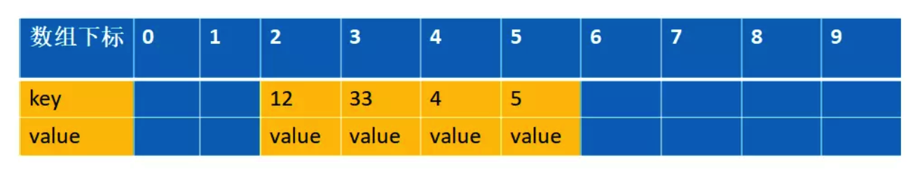
计算key = 15时，发现f(15) = 5，此时就与5所在的位置冲突。
于是我们应用上面的公式f(15) = (f(15)+1) mod 10 =6。于是将15存入下标为6的位置。这其实就是房子被人买了于是买下一间的作法：
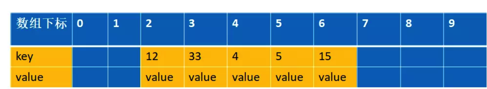
链地址法和开放地址法的优缺点
开放地址法：
- 容易产生堆积问题，不适于大规模的数据存储。
- 散列函数的设计对冲突会有很大的影响，插入时可能会出现多次冲突的现象。
- 删除的元素是多个冲突元素中的一个，需要对后面的元素作处理，实现较复杂。
链地址法：
- 处理冲突简单，且无堆积现象，平均查找长度短。
- 链表中的结点是动态申请的，适合构造表不能确定长度的情况。
- 删除结点的操作易于实现。只要简单地删去链表上相应的结点即可。
- 指针需要额外的空间，故当结点规模较小时，开放定址法较为节省空间。
ThreadLocalMap 采用开放地址法原因
- ThreadLocal 中看到一个属性 HASH_INCREMENT = 0x61c88647 ，0x61c88647 是一个神奇的数字，让哈希码能均匀的分布在2的N次方的数组里, 即 Entry[] table，关于这个神奇的数字google 有很多解析，这里就不重复说了
- ThreadLocal 往往存放的数据量不会特别大（而且key 是弱引用又会被垃圾回收，及时让数据量更小），这个时候开放地址法简单的结构会显得更省空间，同时数组的查询效率也是非常高，加上第一点的保障，冲突概率也低
弱引用
我们看看ThreadLocalMap 中的存放数据的内部类Entry 的实现源码
1 | static class Entry extends WeakReference<ThreadLocal<?>> { |
我们可以知道Entry 的key 是一个弱引用，也就意味这可能会被垃圾回收器回收掉
1 | threadLocal.get()==null |
也就意味着被回收掉了
ThreadLocalMap set 方法
set方法就是先找相同的key，找到了就替换，找不到就新增。
1 | private void set(ThreadLocal<?> key, Object value) { |
还是拿上面解释开放地址法解释的例子来说明下。 比如说，我们的关键字集合为{12,33,4,5,15,25},表长为10。 我们用散列函数f(key) = key mod l0。 当计算前S个数{12,33,4,5,15,25}时，并且此时key=33,k=5 已经过期了（蓝色代表为空的，可以存放数据，红色代表key 过期，过期的key为null）：
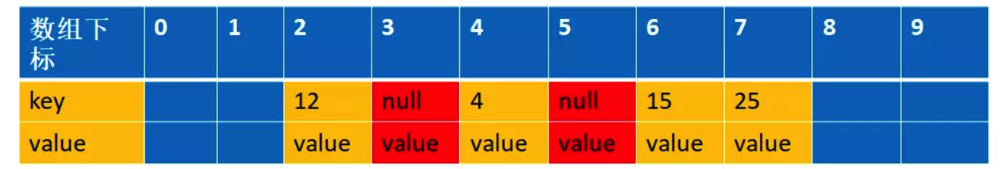
这时候来了一个新的数据，key=15,value=new,通过计算f(15)=5,此时5已经过期，进入到下面这个if 语句
1 | if (k == null) { |
replaceStaleEntry 这个方法
1 | private void replaceStaleEntry(ThreadLocal<?> key, Object value,int staleSlot) { |
第一个for 循环是向前遍历数据的，直到遍历到空的entry 就停止（这个是根据开放地址的线性探测法）,这里的例子就是遍历到index=1就停止了。向前遍历的过程同时会找出过期的key,这个时候找到的是下标index=3 的为过期，进入到
1 | if (e.get() == null) |
注意此时slotToExpunge=3，staleSlot=5
第二个for 循环是从index=staleSlot开始，向后编列的，找出是否有和当前匹配的key,有的话进行清理过期的对象和重新设置当前的值。这个例子遍历到index=6 的时候，匹配到key=15的值，进入如下代码
1 | if (k == key) { |
先进行数据交换，注意此时slotToExpunge=3，staleSlot=5，i=6。这里就是把5 和6 的位置的元素进行交换，并且设置新的value=new,交换后的图是这样的
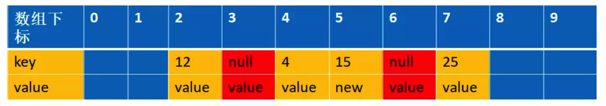
为什么要交换
这里解释下为什么交换，我们先来看看如果不交换的话，经过设置值和清理过期对象，会是以下这张图
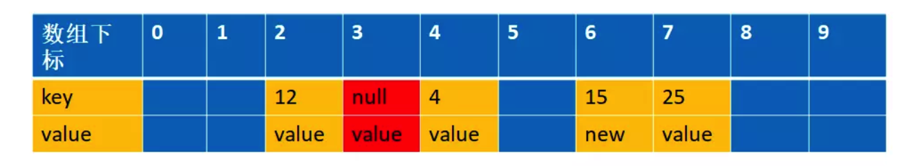
这个时候如果我们再一次设置一个key=15,value=new2 的值，通过f(15)=5,这个时候由于上次index=5是过期对象，被清空了，所以可以存在数据，那么就直接存放在这里了
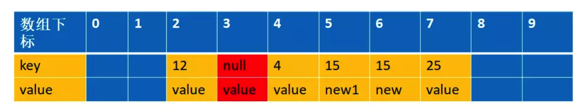
你看，这样整个数组就存在两个key=15 的数据了，这样是不允许的，所以一定要交换数据
expungeStaleEntry
1 | private int expungeStaleEntry(int staleSlot) { |
接下来我们详细模拟下整个过程 根据我们的例子，key=5,15,25 都是冲突的，并且k=5的值已经过期，经过replaceStaleEntry 方法，在进入expungeStaleEntry 方法之前，数据结构是这样的
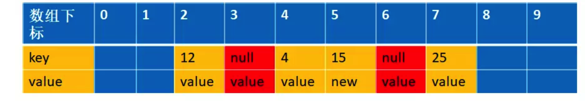
此时传进来的参数staleSlot=6，
1 | if (k == null) { |
这个时候会把index=6设置为null,数据结构变成下面的情况
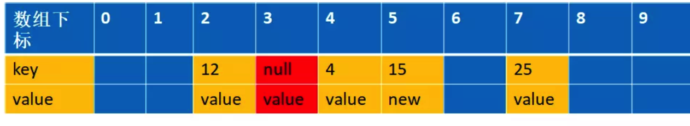
接下来我们会遍历到i=7，经过int h = k.threadLocalHashCode & (len - 1) (实际上对应我们的举例的函数int h= f(25)); 得到的h=5,而25实际存放在index=7 的位置上，这个时候我们需要从h=5的位置上重新开始编列，直到遇到空的entry 为止
1 | int h = k.threadLocalHashCode & (len - 1); |
这个时候h=6，并把k=25 的值移到index=6 的位置上，同时设置index=7 为空，如下图
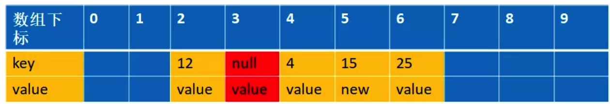
其实目的跟replaceStaleEntry 交换位置的原理是一样的，为了防止由于回收掉中间那个冲突的值，导致后面冲突的值没办法找到（因为e==null 就跳出循环了）
ThreadLocal 内存溢出问题：
通过上面的分析，我们知道expungeStaleEntry() 方法是帮助垃圾回收的，根据源码，我们可以发现 get 和set 方法都可能触发清理方法expungeStaleEntry()，所以正常情况下是不会有内存溢出的 但是如果我们没有调用get 和set 的时候就会可能面临着内存溢出，养成好习惯不再使用的时候调用remove(),加快垃圾回收，避免内存溢出
退一步说，就算我们没有调用get 和set 和remove 方法,线程结束的时候，也就没有强引用再指向ThreadLocal 中的ThreadLocalMap了，这样ThreadLocalMap 和里面的元素也会被回收掉，但是有一种危险是，如果线程是线程池的， 在线程执行完代码的时候并没有结束，只是归还给线程池，这个时候ThreadLocalMap 和里面的元素是不会回收掉的